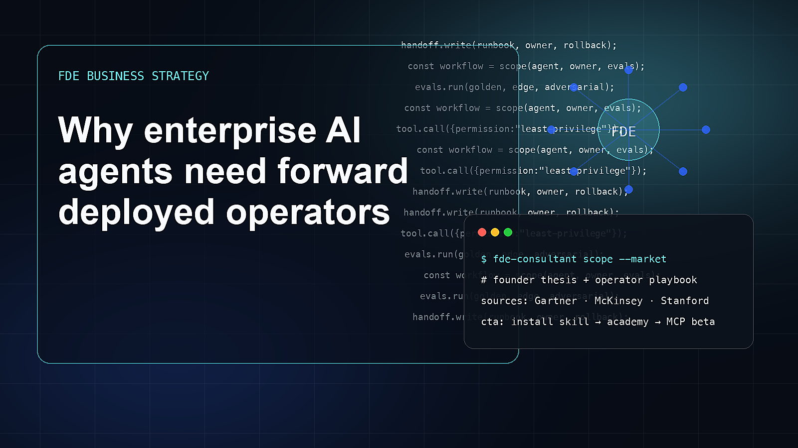

Why enterprise AI agents need forward deployed operators
Enterprise AI agents do not fail because the model is weak. They fail because the workflow is vague, ownership is missing, data is messy, risk is unpriced, and nobody knows what production success means.
The useful way to read the current AI market is not as a sequence of model launches. It is a shift in how work is specified, delegated, verified, and owned. Why enterprise AI agents need forward deployed operators matters because forward deployed operators becoming necessary for enterprise AI adoption changes where value is captured. A founder who only watches model benchmarks will miss the operational layer: who decides what the agent should do, what context it can use, what tools it can call, what counts as failure, and how the result is handed to a team that must live with it after the demo.
The timing is important. Agent adoption is rising, but McKinsey’s findings show many organizations remain early in scaling. Gartner’s 2026 trends emphasize responsible innovation, operational excellence, and digital trust. That is exactly the FDE lane. Generative AI has become mainstream fast enough that buyers now know the language but not necessarily the implementation discipline. That creates a strange market: more companies can imagine AI use cases, yet many still cannot explain the process, data, error cost, current baseline, or success metric. This gap is exactly where forward deployed engineering becomes commercially relevant.
For a founder, the market context should change product strategy. If forward deployed operators becoming necessary for enterprise AI adoption is real, the winning product is not merely a UI that makes a model easier to access. The product must reduce uncertainty for a buyer. It must show how the workflow is selected, how the agent is constrained, how outputs are checked, and how the customer team maintains the system.
The winners in this category will be field operators who understand software and business, founders who package deployment discipline into artifacts, customers who tie AI systems to measurable workflows. They will sound less like hype machines and more like field teams: specific, measurable, grounded, willing to say no. The strongest companies will know when not to use an agent, when to require human review, when to stay local-first, and when a workflow is mature enough for a hosted tool layer.
The losers will be generic AI consultants with no production path, tool vendors that ignore adoption and ownership, buyers who outsource judgment to a model. Their failure will not always look like a broken demo. Often it will look like a pilot that never becomes owned software, a customer success story with no baseline, or a beautiful interface that cannot pass procurement because security, data, ownership, and monitoring were treated as afterthoughts.
Compounding advantage
- field operators who understand software and business
- founders who package deployment discipline into artifacts
- customers who tie AI systems to measurable workflows
False starts
- generic AI consultants with no production path
- tool vendors that ignore adoption and ownership
- buyers who outsource judgment to a model
How to act on this trend
- Begin with domain research, not implementation.
- Map stakeholders and blockers.
- Run 6-Q decomposition and price error.
- Create the scoping report before prototype code.
- Build evals and handoff plan into the prototype.
- Productize repeated field patterns into the open-source Skill.
Market evidence
Install the method before the platform
Use this article as strategic context, then install the open-source Skill and make your agent produce FDE artifacts before implementation.